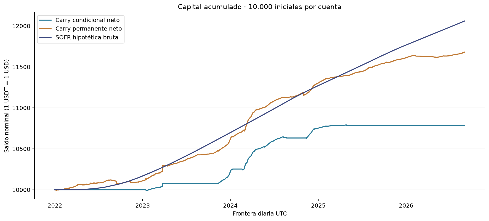
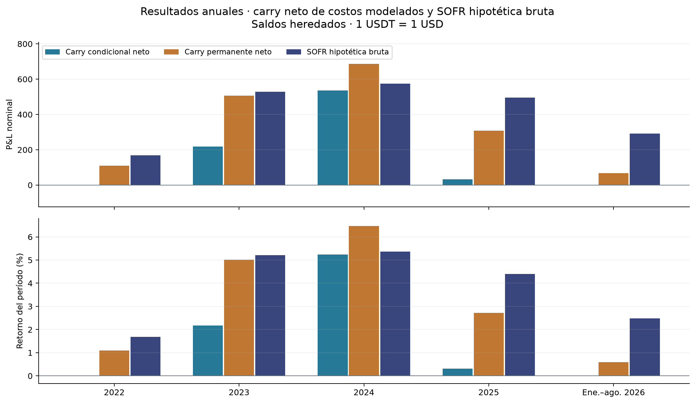
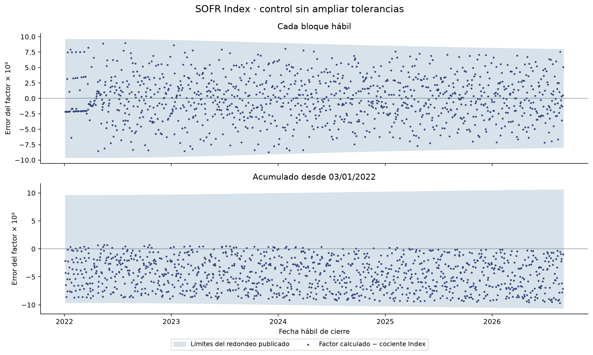

Carry y cuenta SOFR hipotética bruta
Comparación aprobada sobre [01/01/2022, 01/09/2026) UTC: 1.704 días, con 10.000 iniciales en cada cuenta independiente. Las cifras carry son netas de los costos modelados y están expresadas en USDT. La cuenta SOFR es hipotética bruta en USD. La comparación nominal supone 1 USDT = 1 USD durante toda la muestra.
Aprobación · Protocolo · Fuentes y lectura · Verificación y reproducción
Resultado de la cuenta completa
SOFR termina en 12.059,50 USD, con intereses de 2.059,50 USD, retorno 20,595% y CAGR365 4,093%. Estos resultados se interpretan después de validar el calendario, el comienzo inhábil y los contrastes con el Index. No se reinicia el capital al comenzar un año.
| Período | Cuenta | Saldo inicial | Saldo final | P&L | Retorno | CAGR365 |
| Muestra completa | Carry condicional neto | 10.000,00 | 10.785,76 | 785,76 | 7,858% | 1,633% |
| Muestra completa | Carry permanente neto | 10.000,00 | 11.680,07 | 1.680,07 | 16,801% | 3,382% |
| Muestra completa | SOFR hipotética bruta | 10.000,00 | 12.059,50 | 2.059,50 | 20,595% | 4,093% |
La diferencia de P&L carry menos SOFR es -1.273,74 para la condicional y -379,43 para la permanente, en unidades nominales comparadas. Son diferencias descriptivas entre cuentas completas. No miden un beneficio causal recuperable remunerando caja, ni rendimiento por unidad de riesgo o de capital desplegado.

Capital acumulado, con las tres cuentas independientes y la paridad nominal aprobada
Años y saldos heredados
Los saldos iniciales son los efectivamente heredados por cada cuenta. 2026 abarca sólo enero–agosto (243 días); 2024 tiene 366 días. Las sumas de P&L anuales reconcilian con el total; los retornos anuales no se suman. Los P&L de años posteriores usan bases de capital distintas.
| Período | Cuenta | Saldo inicial | Saldo final | P&L | Retorno | CAGR365 |
| 2022 | Carry condicional neto | 10.000,00 | 10.000,00 | 0,00 | 0,000% | 0,000% |
| 2022 | Carry permanente neto | 10.000,00 | 10.109,16 | 109,16 | 1,092% | 1,092% |
| 2022 | SOFR hipotética bruta | 10.000,00 | 10.168,34 | 168,34 | 1,683% | 1,683% |
| 2023 | Carry condicional neto | 10.000,00 | 10.217,44 | 217,44 | 2,174% | 2,174% |
| 2023 | Carry permanente neto | 10.109,16 | 10.616,66 | 507,50 | 5,020% | 5,020% |
| 2023 | SOFR hipotética bruta | 10.168,34 | 10.697,72 | 529,38 | 5,206% | 5,206% |
| 2024 | Carry condicional neto | 10.217,44 | 10.752,57 | 535,13 | 5,237% | 5,223% |
| 2024 | Carry permanente neto | 10.616,66 | 11.303,46 | 686,80 | 6,469% | 6,451% |
| 2024 | SOFR hipotética bruta | 10.697,72 | 11.271,81 | 574,09 | 5,366% | 5,351% |
| 2025 | Carry condicional neto | 10.752,57 | 10.785,85 | 33,28 | 0,310% | 0,310% |
| 2025 | Carry permanente neto | 11.303,46 | 11.611,60 | 308,14 | 2,726% | 2,726% |
| 2025 | SOFR hipotética bruta | 11.271,81 | 11.767,09 | 495,28 | 4,394% | 4,394% |
| Ene.–ago. 2026 | Carry condicional neto | 10.785,85 | 10.785,76 | -0,09 | -0,001% | -0,001% |
| Ene.–ago. 2026 | Carry permanente neto | 11.611,60 | 11.680,07 | 68,46 | 0,590% | 0,887% |
| Ene.–ago. 2026 | SOFR hipotética bruta | 11.767,09 | 12.059,50 | 292,41 | 2,485% | 3,756% |
En esta muestra, la permanente supera el retorno SOFR en 2024; el resto de sus años queda por debajo. La condicional queda por debajo en los cinco cortes anuales. Es una descripción histórica bajo las convenciones aprobadas, sin extrapolación ni garantía.

P&L y retorno por año, con 2026 limitado a enero–agosto
Cortes ya utilizados por el estudio
| Período | Cuenta | Saldo inicial | Saldo final | P&L | Retorno | CAGR365 |
| 2022-2023 | Carry condicional neto | 10.000,00 | 10.217,44 | 217,44 | 2,174% | 1,081% |
| 2022-2023 | Carry permanente neto | 10.000,00 | 10.616,66 | 616,66 | 6,167% | 3,037% |
| 2022-2023 | SOFR hipotética bruta | 10.000,00 | 10.697,72 | 697,72 | 6,977% | 3,430% |
| 2024–ago. 2026 | Carry condicional neto | 10.217,44 | 10.785,76 | 568,32 | 5,562% | 2,049% |
| 2024–ago. 2026 | Carry permanente neto | 10.616,66 | 11.680,07 | 1.063,41 | 10,016% | 3,642% |
| 2024–ago. 2026 | SOFR hipotética bruta | 10.697,72 | 12.059,50 | 1.361,78 | 12,730% | 4,593% |
Se conservan los mismos cortes de H3 como ventanas de comparación. El saldo al 01/01/2024 cae dentro de un bloque inhábil y conserva principal e interés pendiente. Ese corte no capitaliza antes del próximo hábil y no modifica H3 ni sus hipótesis.
Capital utilizado y H2: resultados vigentes reutilizados
| Período | Carry neto | Capital desplegado medio (USDT) | Utilización media diaria | Tiempo activo sin polvo |
| 2022 | Carry condicional neto | 0,00 | 0,000% | 0,000% |
| 2022 | Carry permanente neto | 7.901,45 | 78,473% | 98,279% |
| 2023 | Carry condicional neto | 2.102,08 | 20,844% | 32,945% |
| 2023 | Carry permanente neto | 8.724,06 | 84,235% | 94,315% |
| 2024 | Carry condicional neto | 5.896,77 | 55,975% | 67,017% |
| 2024 | Carry permanente neto | 9.684,18 | 87,877% | 99,045% |
| 2025 | Carry condicional neto | 1.669,93 | 15,492% | 32,056% |
| 2025 | Carry permanente neto | 9.912,43 | 86,482% | 100,000% |
| Ene.–ago. 2026 | Carry condicional neto | 0,64 | 0,006% | 0,000% |
| Ene.–ago. 2026 | Carry permanente neto | 8.467,79 | 72,780% | 100,000% |
En toda la muestra, la utilización media diaria vigente es 19,807% en la condicional y 82,631% en la permanente. Se transcriben las cifras de la corrección vigente: no se vuelve a calcular exposición ni restricciones. El capital utilizado es informativo y no reemplaza al patrimonio como denominador del retorno de cartera.
Métricas carry originales, diarios originales y H2 original son copias byte a byte del paquete previo. La permanente sigue siendo el comparador de H2; el Sharpe carry mantiene RF=0. El Sharpe condicional de 2022 sigue ND por volatilidad muestral cero. No se calcula Sharpe para esta cuenta SOFR ni se infiere riesgo nulo de su suavidad contable.
Verificaciones del calendario y la composición
Se verificaron 1166 fechas hábiles observadas entre 30/12/2021 y 01/09/2026 contra 1707 fechas calendario. Las 53 ausencias de días de semana corresponden a 51 cierres completos SIFMA y dos excepciones NY Fed. No quedaron faltantes hábiles inexplicados, duplicados ni observaciones en inhábiles. Un faltante detiene el cálculo y no se arrastra automáticamente una tasa.
Se distinguen el archivo histórico SIFMA y su calendario 2026. Los cierres tempranos conservan SOFR salvo aviso específico. El NY Fed exceptuó 07/04/2023 y 03/04/2026, y mantuvo publicación para 09/01/2025. 31/12/2021 fue cierre temprano, por lo que su tasa es una observación válida.
El tramo inicial usa exactamente 0,05% anual del 31/12 sólo durante 01/01–03/01: 10.000 × (0,05/100) × 2/360 = 1/36 USD. El bloque fuente abarca tres días; la cuenta sólo participa en dos. El primer cierre devenga 1/72 USD. No hay índice oficial inventado para el sábado ni cociente de tres días aplicado a ese tramo.
Los 1164 bloques se delimitan por hábiles consecutivos, aunque tengan igual tasa. Los 2326 contrastes posteriores al 03/01/2022 incluyen cada bloque y cada acumulación desde ese anclaje hasta 01/09/2026. Todos son compatibles con los intervalos derivados de los ocho decimales publicados del SOFR Index oficial. No se ampliaron tolerancias para lograr coincidencia. La tabla guarda factor calculado, cociente publicado, error y ambos límites para cada control.

Error de composición frente al cociente Index y sus límites de redondeo publicados
Convenciones, alcance y límites
ACT/360 devenga intereses; CAGR365 anualiza rendimientos. Un bloque de n días usa 1 + r×n/360 y capitaliza al siguiente hábil; dentro del bloque el interés es simple. CAGR = (saldo final/saldo inicial)^(365/días) − 1. Se cuentan días reales, incluido 29 de febrero. La metodología NY Fed sustenta el devengamiento; el mapeo de fechas económicas a días UTC es una convención explícita del estudio. No se afirma liquidación real a medianoche UTC.
Cada cierre carry a 23:59:59.999999999 se empareja con el saldo SOFR al término de ese día. No se agrega un día de interés. Se usa la tasa efectiva 31/08 hasta 01/09; la tasa efectiva 01/09 queda fuera. Las tasas realizadas se usan retrospectivamente. La publicación esperada es el siguiente hábil, no la fecha económica; los originales conservan revisionIndicator, pero no acreditan vintages disponibles en tiempo real.
SOFR es una referencia hipotética bruta, sin costos añadidos de conversión, custodia, intermediación, spread o impuestos. No acredita cuenta remunerada accesible, contrato, mínimo comercial ni producto del NY Fed o Binance. La paridad USDT/USD es un supuesto nominal, no convertibilidad garantizada ni equivalencia de riesgos. La trayectoria no mide precios de liquidación ni riesgo de contraparte o liquidez.
El carry conserva sus resultados netos de costos modelados. No se remunera su caja ni sus garantías, no se transfieren fondos y no se ejecutan backtests nuevos. Los diagnósticos de concentración, entrada, exposición y riesgo permanecen en el paquete anterior, enlazado por hash. Esta comparación no los repite ni valida de nuevo el motor. El verificador recalcula sólo este postprocesamiento SOFR; comparte código con el constructor, complementado por fixtures exactos y el contraste Index externo.
Todos los períodos · Diferencias · Cuenta diaria · Bloques · Calendario por fecha · 53 ausencias justificadas · Control inicial · Controles Index